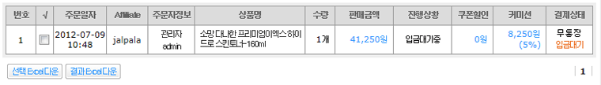
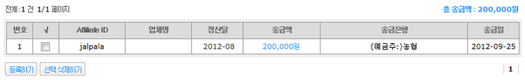

01. Affiliate관리
제휴마케팅 업체(Affiliate)를 등록하고 관리할 수 있습니다.
업체 등록시 판매 커미션을 설정 할 수 있습니다.
등록된 업체는 Affiliate 관리 페이지(http://쇼핑몰/affiliate) 에서 로그인 후 확이 하실 수 있습니다.
02. Affiliate배너관리
제휴마케팅 업체에게 제공될 배너를 등록하고 관리 할 수 있습니다.
03. Affiliate주문관리
Affiliate를 통해 주문한 상품의 주문내역을 확인 할 수 있습니다.

04. Affiliate정산관리
Affiliate 에서 발생한 업체별, 년별, 월별, 일별, 상세 커미션 정산통계를 보실 수 있습니다.
정산통계는 배송완료일 경우에만 집계 됩니다.
05. Affiliate접속통계
Affiliate 업체별, 년별, 월별, 일별, 시간별, 사이트별 접속통계를 보실 수 있습니다.
05. Affiliate송금내역
Affiliate 정산 송금내역을 확인 할 수 있습니다.
